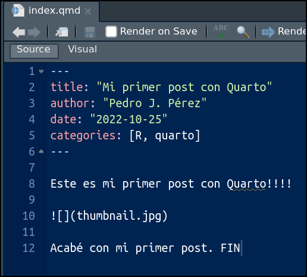

![]()
# 1/ Opciones referentes al proyecto --------------------------------
project:
type: website
#- 2/ Opciones referentes a la estructura de la web -----------------
website:
title: "Mi blog (aún en pruebas)"
navbar:
logo: "profile.jpg"
right:
- text: "About me"
href: about.qmd
- icon: github
href: https://github.com/<tu-usuario-github>
- icon: twitter
href: https://twitter.com/<tu-usuario twitter>
- icon: envelope
url: "mailto:<tu-mail@uv.es>"
left:
- text: "Docencia"
href: docencia.qmd
#- 3/ Opciones referentes al formato de salida ---------------------
format:
html:
theme: minty
css: styles.css
toc: true
highlight-style: a11yEscribiendo posts: practicando con Quarto
(5ª parte del taller Mi primer blog con Quarto)
Advertencia
Voy a suponer que los asistentes al taller, y posible lectores, de estos tutoriales conocen Rmarkdown y han escrito algún documento .Rmd. En ese caso, el paso de .Rmd a .qmd es sencillo.
En cualquier caso, aquí tienes unas FAQ’s para usuarios de .Rmd que se preguntan si pasarse a Quarto, y aquí unas slides sobre las diferencias entre .qmd y .Rmd.
Aquellos que no sepan qué es Rmarkdown pueden empezar por aquí o aquí.
En el tutorial anterior aprendimos a generar nuevos post para nuestro blog. Ahora aprenderemos a escribir esos post; veremos las posibilidades que nos ofrece Quarto a la hora de escribir y formatear nuestros posts.
1 Escribiendo con Quarto
En el tutorial anterior creamos un nuevo post en la carpeta ./posts/my-primer-post/. En realidad ese post es idéntico al primero (welcome) ya que sencillamente hicimos un copy-paste. Ahora sí que vamos a modificar el contenido (yaml/texto/chunks) del post para aprender algunos truquillos sobre Quarto.
Ya sabemos que la carpeta ./posts/my-primer-post/ contiene dos archivos. El importante es index.qmd que es el archivo que genera el post. Veámoslo:

Los ficheros .qmd tienen 3 partes: YAML, texto y chunks de código. Vamos a verlas una a una.
2 YAML
El encabezamiento o YAML, se utiliza para fijar determinadas opciones y metadatos de nuestro documento1.
Una idea importante a recordar es que estamos trabajando con un Qproject. Trabajar con un Qproject tiene ventajas2, entre ellas:
poder procesar todos los archivos con un solo comando:
quarto render <myproject>la posibilidad de “freeze rendered output”
la posibilidad de redireccionar los documentos de salida (output) a otro directorio
posibilidad de compartir la configuración del YAML para múltiples documentos. Los metadatos compartidos se pueden definir tanto a nivel de proyecto como a nivel de directorio.
Esta última ventaja, la posibilidad de compartir opciones de metadatos YAML en varios documentos, es importante ahora, porque nos da diferentes posibilidades para especificar el YAML de nuestros documentos o posts.
2.1 El yaml de un post
En un post se pueden especificar opciones YAML de 3 formas/niveles:
Nivel proyecto: todos los Qprojects contienen un archivo de configuración llamado
_quarto.yml, de forma que, todo documento que se procese (render) dentro del proyecto, heredará automáticamente los metadatos definidos en_quarto.yml.Nivel carpeta: si en una carpeta existe un documento
_metadata.yml, los documentos de esa carpeta tendrán automáticamente las opciones definidas allí. La carpeta/posts/de un blog suele tener un archivo_metadata.yml.Nivel documento: En el yaml del propio post o documento
.qmd
De esta forma, potencialmente, un post puede recibir opciones de YAML desde los 3 niveles. Si hay conflictos prevalecen las opciones del nivel documento, luego nivel carpeta y finalmente nivel proyecto.
Los blogs se publican en formato html, de forma que, aquí y aquí tienes la documentación oficial de Quarto con las principales opciones que se pueden fijar con el YAML para documentos html.
Como ves, es imposible repasar todas las opciones en el taller, solamente veremos algunas. Para ello, creo que la forma más operativa para el taller es mostrar ejemplos de ficheros .yml y revisar su contenido.
Abajo el contenido del fichero _quarto.yml tal y como lo tenemos ahora en nuestro blog. Solo he añadido 3 comentarios para diferenciar entre secciones:
Abajo el, contenido del fichero /posts/_metadata.yml. Afectará a todos los ficheros .qmd que haya en la carpeta /posts/
# options specified here will apply to all posts in this folder
# freeze computational output
# (see https://quarto.org/docs/projects/code-execution.html#freeze)
freeze: true
# Enable banner style title blocks
title-block-banner: trueAbajo el encabezamiento del fichero /posts/my-primer-post/index.qmd:
---
title: "Mi primer post con Quarto"
author: "Pedro J. Pérez"
date: "2022-10-25"
categories: [R, quarto]
---
Este es mi primer post con Quarto!!!!

Acabé con mi primer post. FIN2.2 Distintas opciones YAML
Opciones referentes al proyecto
Estas opciones, en principio, sólo se pueden poner una vez y, por tanto, se especifican en el fichero _quarto.yml (nivel proyecto).
# 1/ Opciones referentes al proyecto ----------------------------
project:
type: website
output-dir: docs #- podemos cambiar la carpeta donde se redirige el output (.html)
# execute-dir: project #- the working directory for rendering files within a project is the directory of the file itself. If you prefer to use the main project directory instead, you can add the execute-dir: project
#- https://quarto.org/docs/projects/code-execution.html#working-dirComo vemos, podemos cambiar:
la carpeta donde se generará el output del proyecto (linea 4: output_dir : docs).
el directorio de trabajo en el que se procesan los
.qmd(linea 5: execute-dir: project). Yo no lo haría, estoy muy acostumbrado a que el directorio de trabajo de los.Rmdsea la carpeta donde se procesan.
Opciones referentes a la estructura de la página web
Ya vimos algunas opciones en el 2º tutorial, veremos algunas más, pero será en el 7º tutorial. Como ejemplo, podríamos modificar esa sección de _quarto.yml para dejarla como:
#- 2/ Opciones referentes a la estructura de la web -----------------
website:
title: "Mi blog (aún en pruebas)"
favicon: imagenes/ababol_redondeado.ico
site-url: https://perezp44.github.io/taller.primer.blog/
repo-url: https://github.com/perezp44/taller.primer.blog
open-graph: true #-https://quarto.org/docs/websites/website-tools.html#twitter-cards
twitter-card:
creator: "@tu-usuario-twitter"
card-style: summary_large_image
navbar:
logo: "profile.jpg"
#background: primary #- pink
right:
- text: "About me"
href: about.qmd
- icon: github
href: https://github.com/<tu-usuario-github>
- icon: twitter
href: https://twitter.com/<tu-usuario-twitter>
- icon: envelope
url: "mailto:<tu-mail@uv.es>"
left:
- icon: house-door
href: index.html
- text: "Docencia"
href: docencia.qmd
page-footer:
left: "© 2022 Pedro J. Pérez"
center: "Hecho con [Quarto](https://quarto.org)"
right:
- icon: github
href: https://github.com/<tu-usuario-github>
- icon: twitter
href: https://twitter.com/<tu-usuario-twitter>
- icon: envelope
url: "mailto:<tu-mail>@uv.es"
- text: <i class="ai ai-google-scholar" role="img"></i>
href: https://scholar.google.de/citations?user=<tu-user>&hl=en
- text: <i class="ai ai-orcid" role="img"></i>
href: https://orcid.org/<tu-numero-orcid>Como ves, se añadirían elementos como:
Un pie de página (lineas 28 a 41)3
Hemos añadido un elemento a la
navbarconcretamente el iconoHome(lineas 24 y 25). La documentación oficial para elementos de navegación está aquíElementos de redes sociales como un favicon (linea 4), el url de la web y del repo en Github (lineas 5 y 6) y más elementos de redes sociales (lineas 7 a 10). La documentación oficial para estos elementos está aquí
3 Texto
El texto (o narrativa) de un documento .qmd se escribe, al igual que en los documentos .Rmd en markdown. Aquí la documentación oficial de Quarto.
3.1 Sintaxis básica de markdown
Aquí puedes ver o recordar la sintaxis básica, las principales reglas para escribir en
markdown.Como ejemplo:
| SI ESCRIBES ESTO: | SE VERÁ ESTO (output): |
|---|---|
| Formato de texto | |
|
italics and bold |
|
superscript2 / subscript2 |
|
|
|
verbatim code |
| TÍTULOS | |
3.2 Más elementos para “escribir”
Además de los elementos de escritura que nos ofrece la sintaxis básica de markdown. Quarto nos ofrece más posibilidades, veamos algunas de ellas:
Figuras
Tablas
https://quarto.org/docs/authoring/tables.html
- Escribir con el editor visual: https://www.rstudio.com/blog/exploring-rstudio-visual-markdown-editor/
4 Chunks de código
Los chunks de código también son muy similares en
.qmdque en `.RmdLas principales diferencias son:
Link interno al 4º tutorial
5 Extras
Create a tabset via a markdown div with the class name panel-tabset (e.g. ::: {.panel-tabset}) https://quarto.org/docs/output-formats/html-basics.html#tabsets
Bilio (.csl, .bib, lin-citations: yes)
6 Resumen
7 Referencias
(Algunos artículos sobre creación de blogs en Quarto)
- Eric Ekholm. 2022. Modifying the Default Quarto Blog Structure es una web con blog . GOOOOD
Notas
El
YAMLserá procesado varias veces durante el procesado del documento: es leído por Quarto, knitr y Pandoc e influirá en el resultado final, pudiendo afectar al código, al contenido y al procesado del documento↩︎Puedes ver la documentación oficial de Quarto sobre proyectos aquí↩︎
Puedes ver un ejemplo de cómo quedaría el pie de página en la web del taller, aquí↩︎
Reutilizar
Cita
BibTeX
@online{j.pérez2023,
author = {Pedro J. Pérez},
title = {Escribiendo posts: practicando con Quarto},
date = {2023-11-10},
url = {https://perezp44.github.io/taller.primer.blog//05_taller_escribir-posts.html},
langid = {es}
}
Por favor cita este trabajo como:
Pedro J. Pérez. 2023. “Escribiendo posts: practicando con
Quarto.” November 10, 2023. https://perezp44.github.io/taller.primer.blog//05_taller_escribir-posts.html.